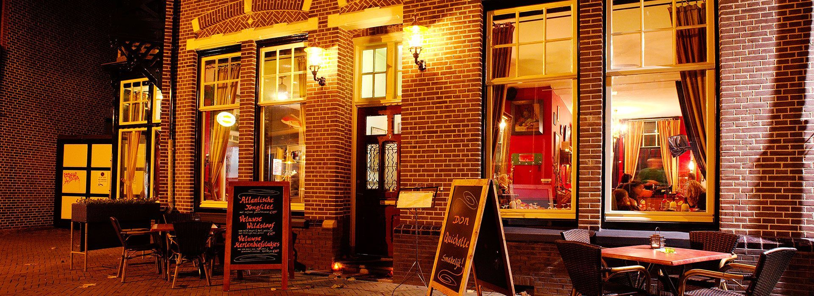
Sinds 2000 aan de Van Kinsbergenstraat
Don Quichotte
Traditioneel en avontuurlijk. Smakelijk en betaalbaar eten in een monumentaal pand uit 1897, in het hart van Apeldoorn.
- Keuken open
- vanaf 17.00 uur
- Gesloten
- maandag, dinsdag en woensdag
- Adres
- Van Kinsbergenstraat 3, Apeldoorn
Ongedwongen tafelen, al sinds 2000
Restaurant Don Quichotte in Apeldoorn is al sinds 2000 een vertrouwd adres voor ongedwongen tafelen in een sfeervol monumentaal pand uit 1897. De kaart kent vele klassieke gerechten. Daarnaast werken wij met een specialiteitenbordje, de seizoenen of Bourgondische ingevingen volgend.
De veelzijdige keuken wordt hoog gewaardeerd door zowel vaste gasten als vele passanten, evenals de gastvrijheid van de persoonlijke bediening.
Vaak wordt gedacht dat Don Quichotte een Spaans restaurant is, maar de keuken is eerder Frans/internationaal georiënteerd. De naam verwijst meer naar de zeggingskracht van deze grote held uit de wereldliteratuur dan naar zijn land van herkomst.
Wij heten u van harte welkom om het avontuur of de traditie te komen proeven!
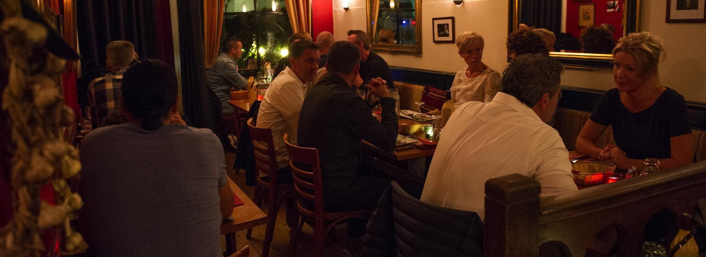
Menukaart
Maatwerk. Kleine porties voor de kleine eter en grote porties voor de grote eter, zelfs bij het dessert. Kies per gerecht een halve, hele of anderhalve portie.
½ klein 1 normaal 1½ groot
Borrel, bites en voorgerechten
- Mandje stokbrood met DQ saus5
- Mini loempia's met chilisaus v (10 stuks)9
- Bourgondische rundvleesbitterballen met mosterd (8 / 12 stuks)1013
- Torpedogarnalen met licht pittige citroendip (8 / 12 stuks)12,5017
- Amuse van WP Keukenmeester6
Koud ½11½
- Feta + watermeloen met kruidige rauwkost en Veluwse honing v7,5012,5018
- Zalmrolletjes + roomkaas, met ingelegde groentes en wasabi-sesam91623
- Zacht gegaarde kip ‘spicy paradise’ met guacamole dip8,501521,50
Soep ½1
- Italiaanse tomatensoep met basilicumroom v6,508,50
- Soep van de dag, zie het specialiteitenbordjedagprijs
Warm ½11½
- Champignons gratinés met kaassaus en cashewnoten v712
- Gefrituurde mosselen met DQ jazzysaus712
- Scampi gerold in bacon en kruidenboter (3 / 6 / 9 stuks)101828
- Slakken in het huis, half dozijn15
- Indische gehaktballetjes (rund/varken) met satésaus en seroendeng8,5015
To share
- Don Quichotterieën onze Bourgondische voorgerechtenschaal, traditioneel en avontuurlijk, vanaf 2 personen18,50 p.p.
Hoofdgerechten ½11½
- Huisgemaakte groententaart met gorgonzolasaus en cashewnoten apart v1526
- Crunchy mais-ribbetjes gelakt met BBQ saus + knolselderijpuree v1526
- Vis van de dag, zie het specialiteitenbordjedagprijs
- Tongrolletjes met verse zalm en wittewijnsaus16,5028,50
- Spaghetti met gamba’s en kreeftensaus16,5028,50
- Zacht gegaarde procureur met provençaalse saus16,5028,50
- Kalfslever, klassiek met spek, ui en appel1729
- Boeuf au bleu nr. 1! ossenhaaspuntjes met gorgonzolasaus en cashewnoten2036
- Tournedos van de grill met rozemarijn-portsaus2139
- Tournedos aux poivres bijgenaamd ‘de scherpe egel’, zeer gepeperd dus!21,5039,50
- Back on the grill 24 uur gemarineerde Angusbiefstukjes met knoflookjus (125 / 250 / 375 gram)17,5029,5042,50
- Carnivorenfestijn van Lee Kok Bourgondisch vleespalet van 1 pond! (delen mag)50
Al onze hoofdgerechten worden geserveerd met luxe puree en huisgemaakte rauwkost.
Side
- Frisse salade5
- Frites met mayonaise en DQ jazzy-saus5
- Warme groentes5
Desserts
- Kaasplankje van vier verschillende kazen met dipje13,50
- Griekse yoghurt met noten, rozijnen en Veluwse honing9
- Cheesecake van de dag welke smaak is er vandaag? Ook om mee te nemen: 810
- Dulcinea 3 soorten sorbetijs met vers fruit10
- Dame blanche klassieker met warme chocosaus8,50
- Hazelnootijs met caramelsaus en nootkrokantjes8,50
- Coupe colonel orange citroenijs met wodka en verse jus10
- Don Quichotte brownies chocolate paradise... Ook om mee te nemen: 810
- DQ Postzegel dessert in miniformaat, of maak uw eigen postzegelalbum!4 per stuk
- Dunkyshot! bol vanille-ijs met grove peper en Pernod5
- Koffie met Sancho Panza likeurtje apart7,50
- Sancho Panza Panza koffie met SP likeur en cognac erin, plus slagroom9,50
To share
- DQ Grand Dessert onze Bourgondische nagerechtenschaal, traditioneel en avontuurlijk, vanaf 2 personen16 p.p.
Allergie? Laat het ons weten. v = vegetarisch
Eet smakelijk!
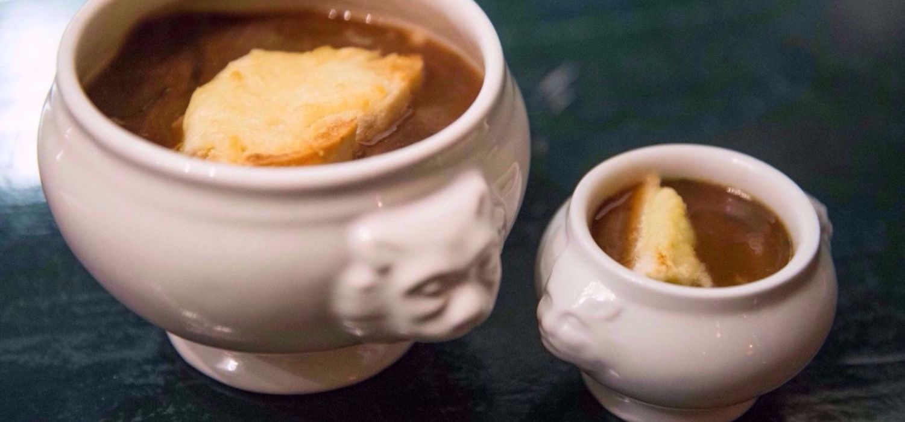
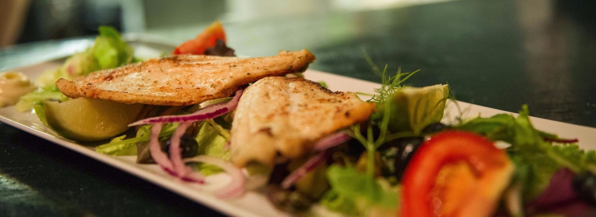
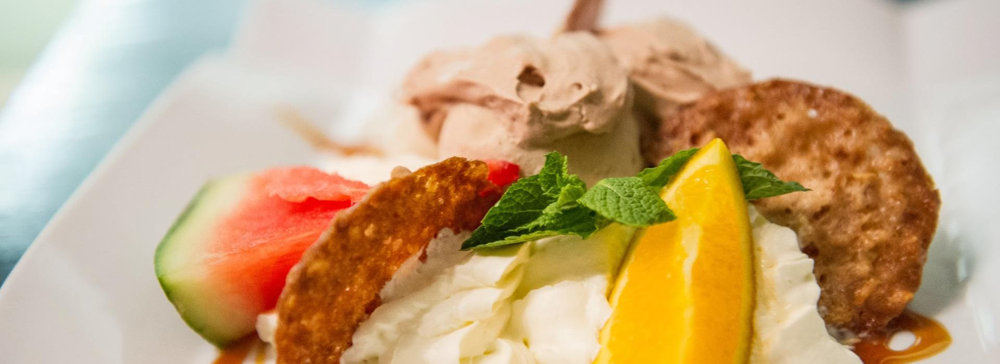
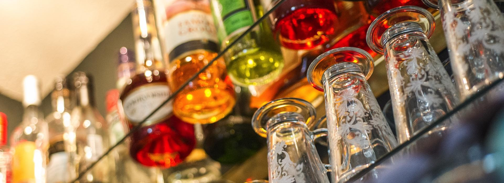
Vijftien wijnen per glas
Wij hebben 15 wijnen die wij per glas serveren. Voor ieder wat wils! De wijnkaart kent wit en rosé en een kaart met rode wijnen.
Bekijk de wijnkaartWist u dat?
Small, medium en large
Wij serveren verschillende portiegroottes. Kleinere porties voor de kleinere eter, grotere porties voor de grotere eter.
Buiten eten
Don Quichotte heeft een heerlijk beschut achtertuintje waar u in de zomer kunt dineren, en een voorterras aan de gezellige Van Kinsbergenstraat.
Dieetwensen
Wij proberen zoveel mogelijk rekening te houden met al uw dieetwensen. Geef ze wel graag van tevoren aan, om misverstanden en teleurstellingen te voorkomen.
Brownies en cheesecake
Wij zijn trots op onze overheerlijke brownies en cheesecake van de chef. Ook in een kleine portie (onze postzegel), en u kunt ze ook meenemen.
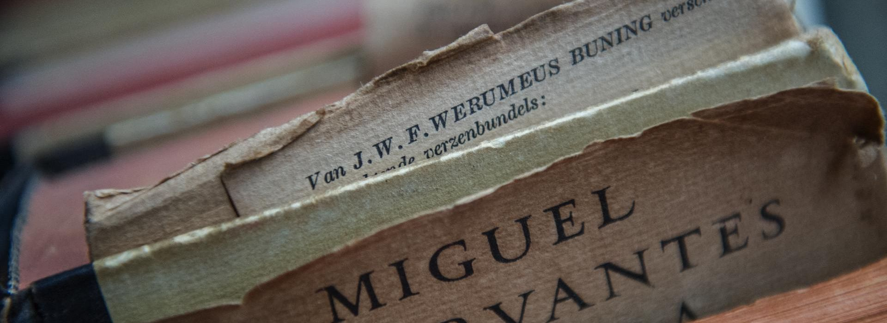
Een ridderlijke naam, een monumentaal pand
Welkom in restaurant Don Quichotte, genoemd naar de illustere hoofdpersoon uit een van de meest gelezen boeken ter wereld, van Miguel de Cervantes. Deze beroemde ridder beleeft met zijn trouwe knecht Sancho Panza talloze avonturen en is een tikkeltje eigenzinnig. Hij is vooral bekend om zijn gevecht tegen de windmolens.
Het pand in de Apeldoornse binnenstad was ooit een statig woonhuis; de twee marmeren schouwen zijn daarvan het beste voorbeeld. Nummer 3 werd vooral bekend door handwerkzaak De Regenboog, een unieke winkel die hier 50 jaar lang werd gevoerd door twee zusters.
- 1897Het monumentale pand wordt gebouwd.
- 1995Het pand krijgt een horecabestemming; visrestaurant Indigo Mer vestigt zich hier.
- 2000Chefkok Henk Derksen en gastheer Kees Roos openen op 30 april, toen nog Koninginnedag, restaurant Don Quichotte. Na een korte samenwerking gaat Kees alleen verder als eigenaar.
- 2012Kees komt op een middelbareschoolreünie Lotte Nuyten weer tegen. Lotte neemt steeds meer taken op zich en wordt zijn rechterhand.
- NuSamen ontvangen ze vol enthousiasme, met een goed draaiend team, hun gasten.
In dit bijzondere historische pand hopen wij dat u geniet van de gastvrijheid en flexibiliteit van ons team, elke keer weer. En uiteraard van onze traditionele en avontuurlijke gerechten!
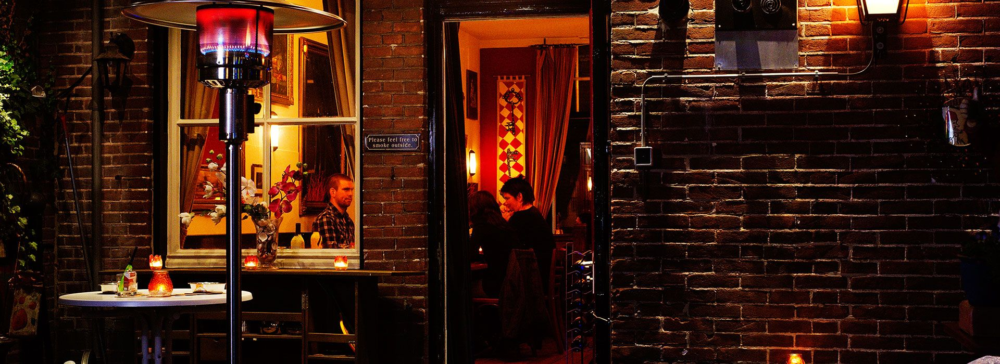
Het hele restaurant voor uw gezelschap
Op dinsdagen en woensdagen kan Don Quichotte worden afgehuurd voor gezelschappen, mits tijdig en in goed overleg gereserveerd. U stelt dan samen met de keuken een mooi menu samen.
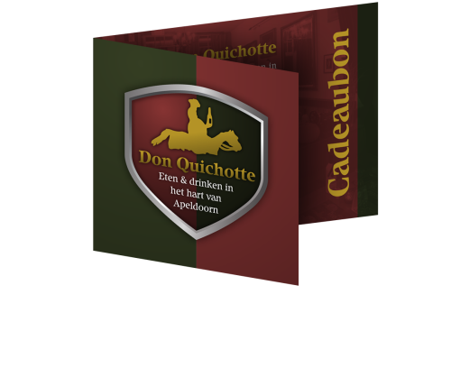
Cadeaubon
In huisstijl vormgegeven zijn onze cadeaubonnen een herkenbaar en uniek geschenk, alleen te koop en in te wisselen bij restaurant Don Quichotte aan de Van Kinsbergenstraat 3 te Apeldoorn. Vanaf € 25 voor ieder gewenst bedrag verkrijgbaar!
Diner- en restaurantcadeaukaarten
Op vrijdagen en zaterdagen kunt u geen dinercadeaukaart en/of restaurantcadeaukaart meer bij ons verzilveren. Op andere dagen bent u nog steeds van harte welkom met deze kaarten (uitgezonderd 24 en 27 december 2026).
Vacature: kok of keukentalent
Wij zijn per direct op zoek naar een kok, keukentalent of gepassioneerde collega (m/v) voor 2 tot 4 dagen in de week. Ben jij enthousiast, gemotiveerd en beschikbaar om te komen werken, te leren en door te groeien in onze “old school keuken”?
Mail naar info@restaurant-donquichotte.nl, bel naar 06 10717161 of loop even binnen.
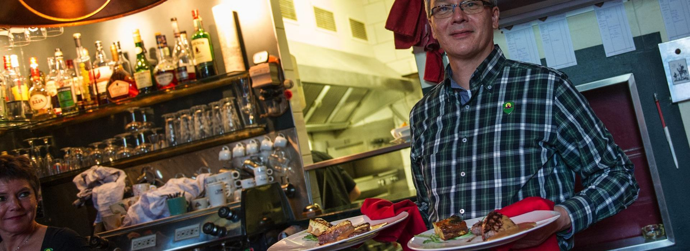
Alvast een kijkje in ons restaurant
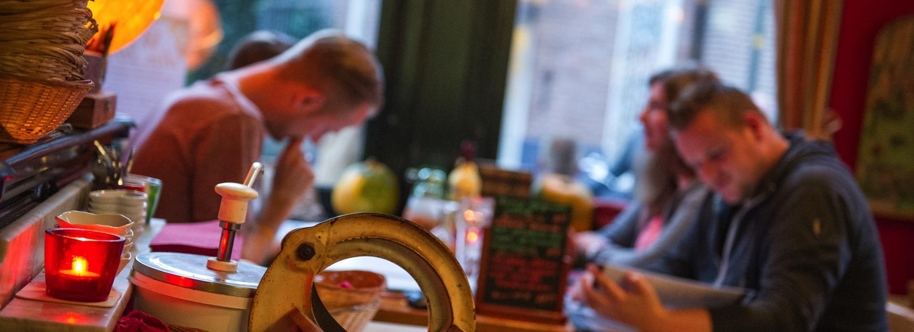
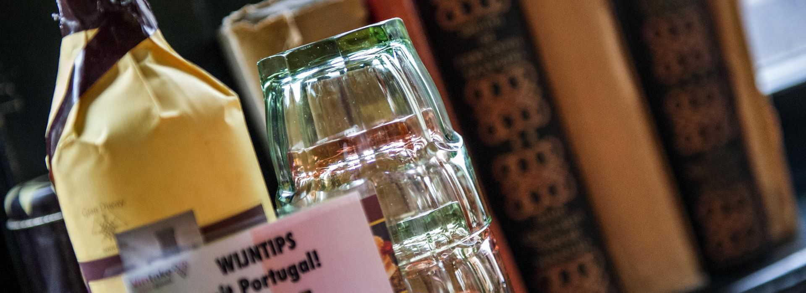
Reserveren en contact
info@restaurant-donquichotte.nl
Van Kinsbergenstraat 3
7311 BL Apeldoorn
Openingstijden
| Maandag | gesloten |
|---|---|
| Dinsdag | gesloten (te huur voor gezelschappen) |
| Woensdag | gesloten (te huur voor gezelschappen) |
| Donderdag t/m zondag | keuken vanaf 17.00 uur |